Segregação Espacial
Concentração da pobreza em bairros degradados.
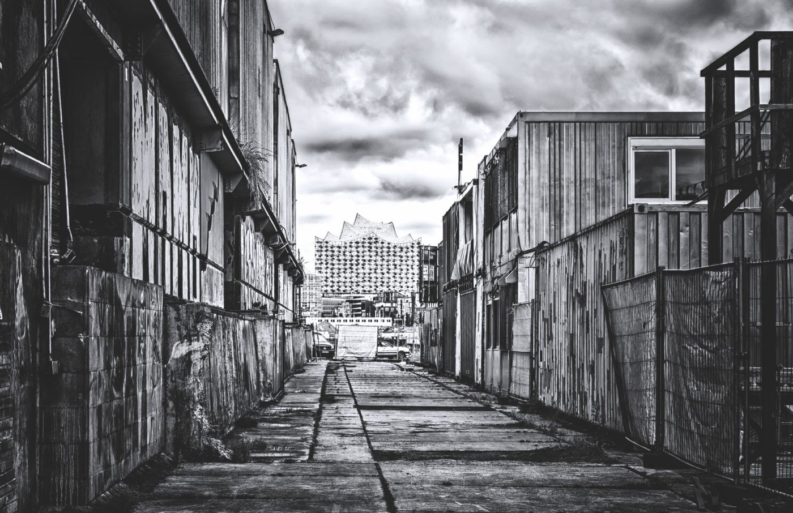
Um problema social que começa na falta de recursos e termina na falta de oportunidades.
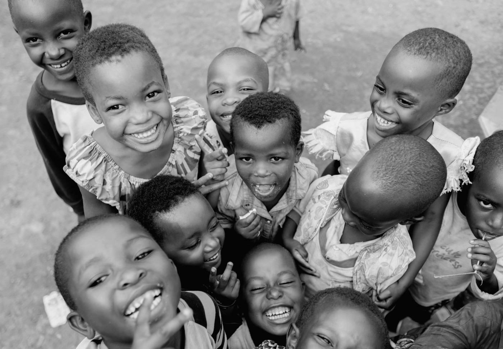
A pobreza e a exclusão social constituem um dos desafios mais complexos dos dias de hoje. Mais do que a falta de recursos económicos, a pobreza social traduz-se na marginalização dos indivíduos, gerando exclusão social e um acesso limitado a direitos fundamentais como a saúde, a habitação e o emprego.
Esta realidade torna-se ainda mais grave quando analisamos a pobreza infantil. A privação de necessidades básicas como a alimentação e a educação compromete gravemente o desenvolvimento e o futuro das crianças, perpetuando o ciclo da desigualdade.
Para combater este cenário, surge o Projeto “Nenhuma criança fica para trás”. Focado em garantir um acesso igual para todos, este projeto assume-se como uma resposta urgente para combater as desigualdades e construir uma sociedade mais justa e inclusiva.
A exclusão social é o processo de afastamento e marginalização de indivíduos ou grupos dos mecanismos de participação na sociedade.
Ela não decorre apenas da falta de dinheiro, mas sim de uma barreira invisível que impede o cidadão de usufruir de direitos básicos e de se integrar plenamente na comunidade. Esta realidade manifesta-se em várias vertentes:
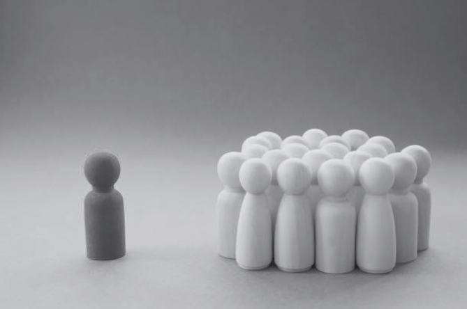
Concentração da pobreza em bairros degradados.
Falta de oportunidades reais de qualificação profissional.
Discriminação baseada na classe socioeconómica, etnia ou origem geográfica.
O acesso limitado representa as barreiras económicas e sociais que impedem os indivíduos em situação de pobreza de usufruir de recursos vitais, como educação, saúde e habitação digna. Esta privação isola as pessoas das oportunidades fundamentais, perpetuando o ciclo da exclusão social.
Estatísticas com base nos dados oficiais mais recentes do INE em 2024 (por falta de atualizações).
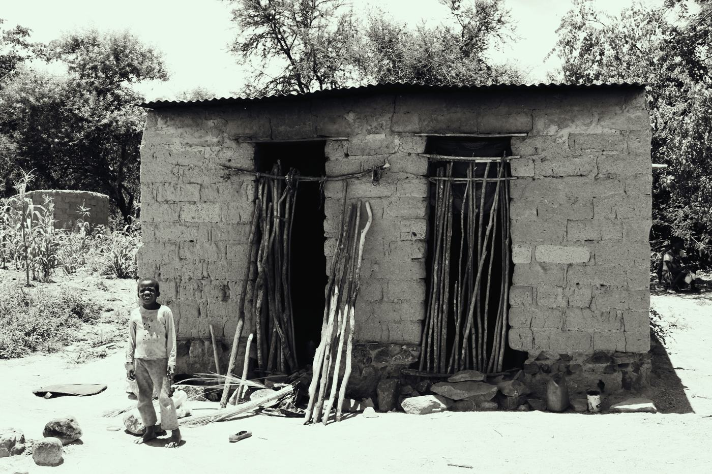
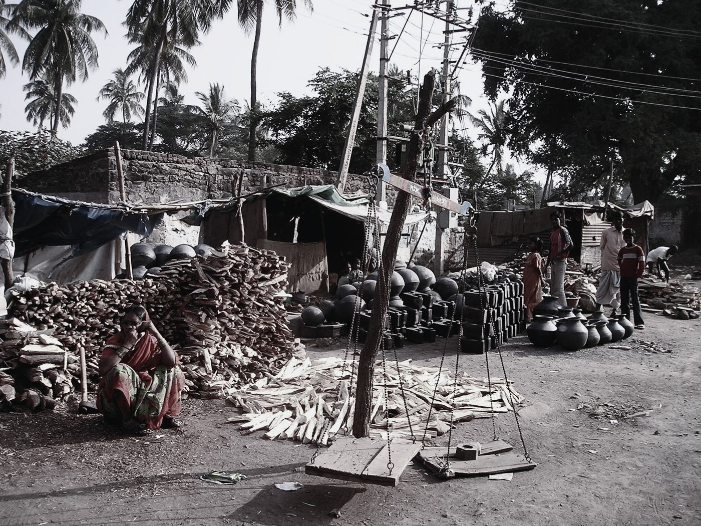
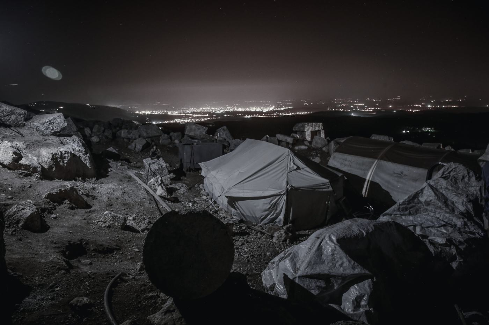
Pobreza (geral)
Pobreza infantil
Acesso limitado
As crianças de famílias com baixos rendimentos podem não receber o estímulo ou as competências sociais de que precisam para se prepararem para a escola.
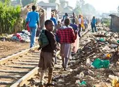
Pessoas em risco de pobreza ou exclusão social em Portugal:
das crianças
dos adultos
dos adultos e crianças
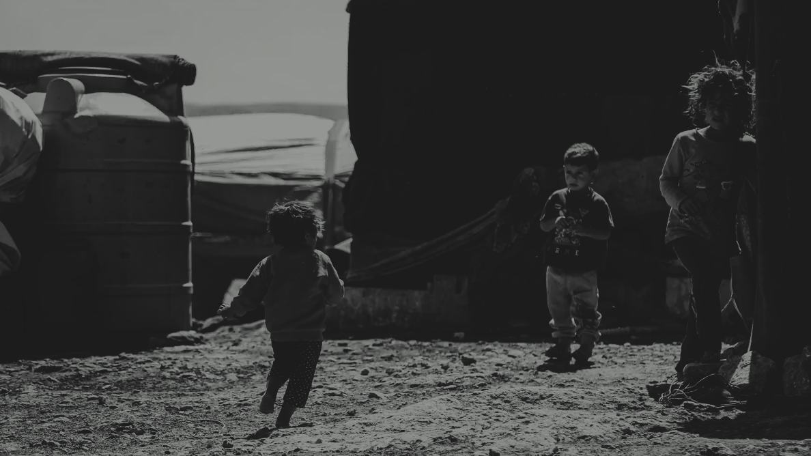
A privação de necessidades básicas na infância compromete gravemente o desenvolvimento físico, cognitivo e emocional de uma criança. Por não terem autonomia para alterar a sua própria condição financeira, as crianças dependem inteiramente do meio familiar e das políticas públicas para verem os seus direitos salvaguardados.
“Uma em cada seis crianças até aos cinco anos continua a viver em situação de pobreza em Portugal.”
“Metade não participa regularmente em atividades extracurriculares ou de lazer e muitas enfrentam limitações básicas.”
A privação de necessidades básicas corresponde à situação em que uma pessoa, por falta de recursos económicos, não consegue satisfazer pelo menos cinco dos treze itens essenciais definidos pelo INE como necessidades materiais e sociais.
Segundo a definição oficial do INE, a privação material e social ocorre quando alguém vive com carências económicas que impedem o acesso a cinco ou mais dos 13 itens essenciais. Estes itens abrangem despesas do agregado e condições individuais.
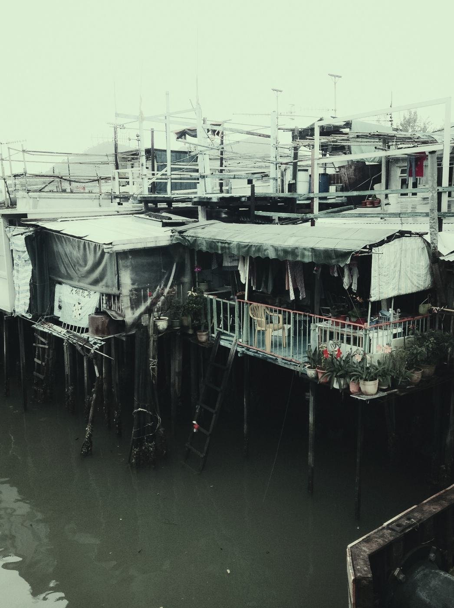
Marque os itens para ver quantos já falhariam. Com 5 ou mais, existe privação.
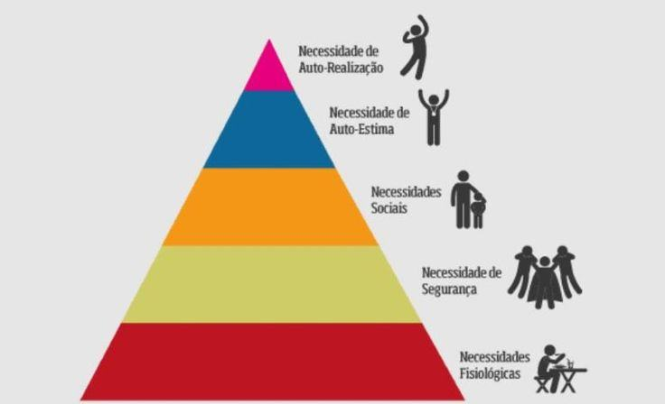
0 de 13 itens em falta
O acesso igual a todos é a pedra angular no combate à pobreza infantil, garantindo que o futuro de uma criança não seja determinado pelas condições socioeconómicas em que nasce.
Pode contribuir de três formas: voluntariado, doações e sensibilização.
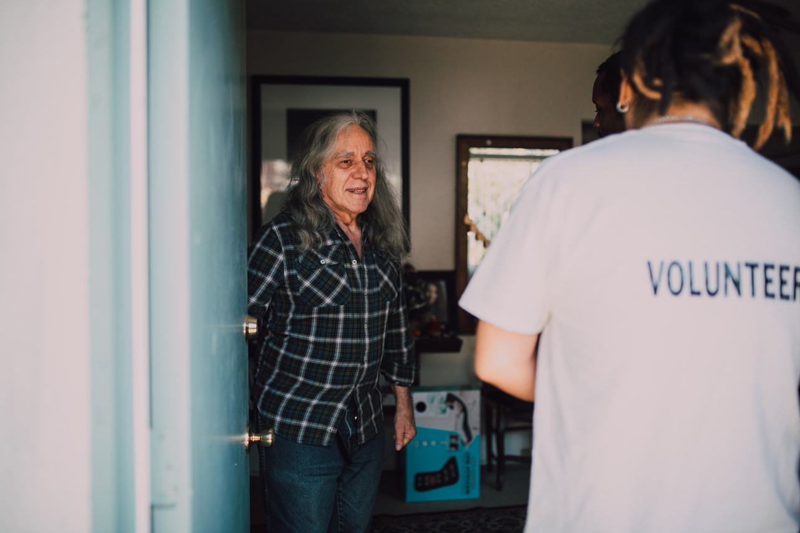
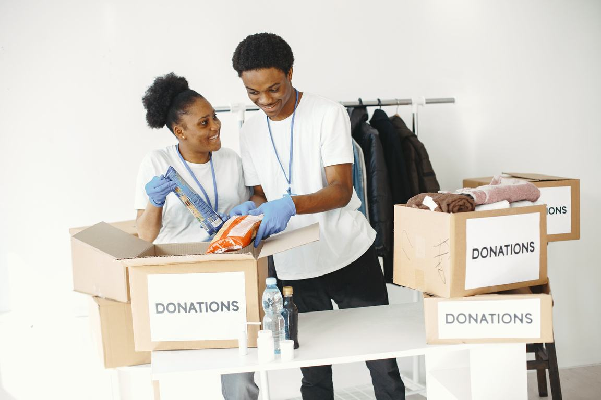
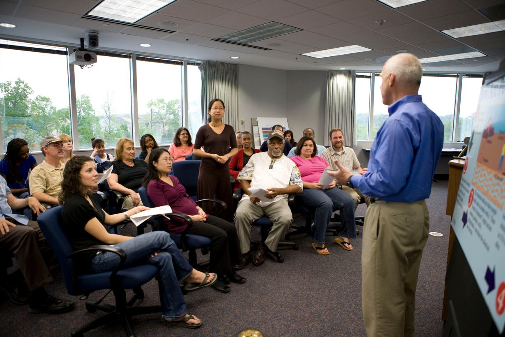
Programas de apoio a famílias carenciadas, incluindo apoio alimentar, apoio à habitação, acompanhamento social e um Banco de Recursos com vestuário, produtos de higiene, mobiliário e artigos para crianças.
Tel. 224 660 500
Balcão Único de Atendimento, Praça do Cidadão, Gondomar
Promove os direitos das crianças e intervém em situações de risco. Relevante quando a pobreza compromete as condições de vida, a segurança, a educação ou o desenvolvimento de uma criança.
Acompanhamento social de pessoas e famílias em situação de vulnerabilidade, exclusão ou emergência social, orientando-as para as respostas e prestações sociais adequadas.
Tel. 224 219 920
Rua 25 de Abril, 319, Baguim do Monte
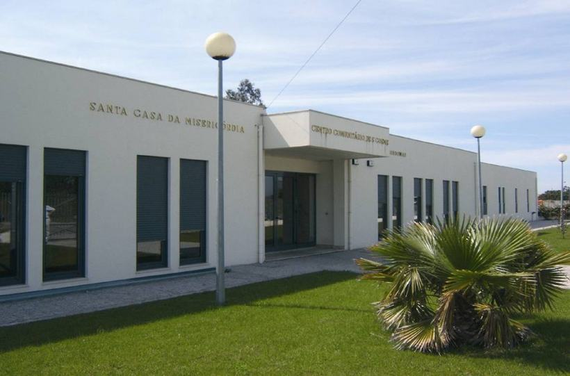
Instituição de solidariedade social com respostas de apoio à infância e às famílias. Participa na rede local de combate à pobreza e à exclusão social. Tem uma Casa de Acolhimento para crianças dos 0 aos 12 anos em situação de risco, como maus-tratos ou negligência. O acolhimento pode ser imediato e temporário.
Tel. +351 224 648 786
R. Novais Cunha 617, S. Cosme
Em Rio Tinto, desenvolve respostas sociais e educativas para crianças e jovens, incluindo creche, educação pré-escolar e atividades de apoio ao estudo, além de intervenção comunitária.
Tel. 224 809 183
Rua Macau, 100, Rio Tinto
Apoio social a pessoas vulneráveis. Pode ser contactada para orientação sobre necessidades básicas e apoio a famílias com crianças pequenas.
Tel. 224 103 712
Rua Padre Domingos Baião, 166, Baguim do Monte